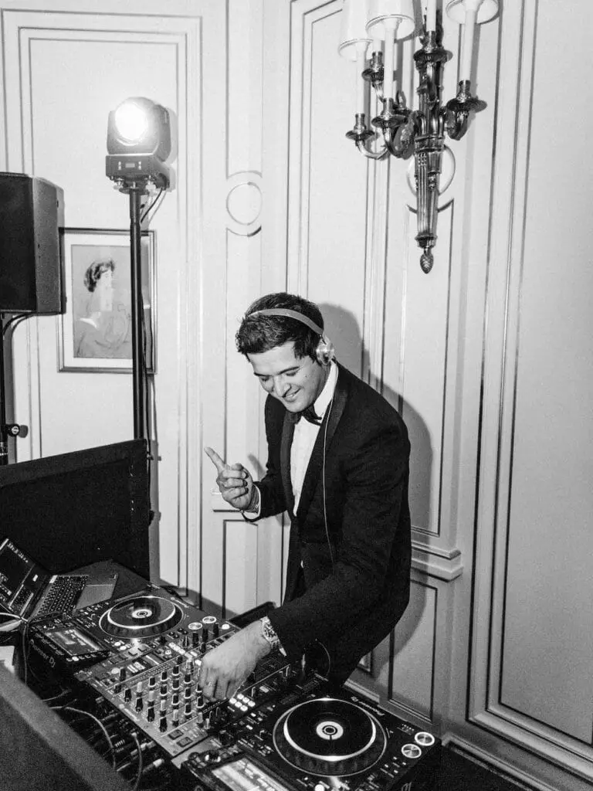
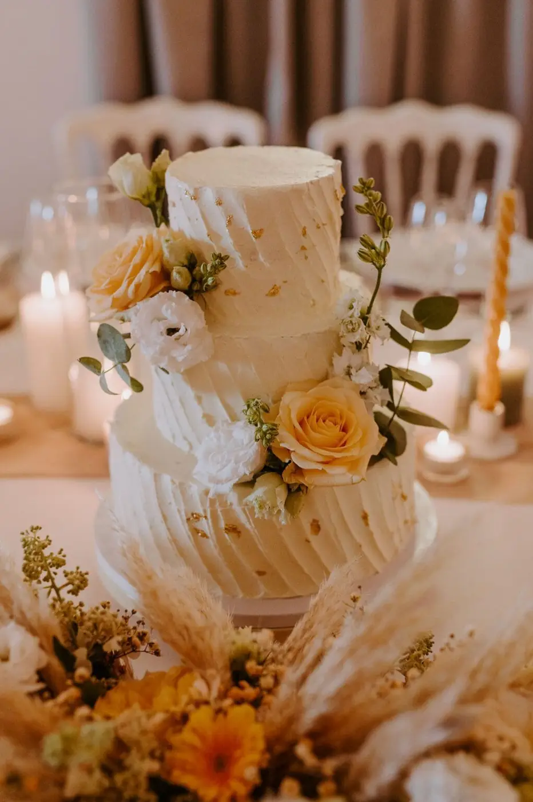
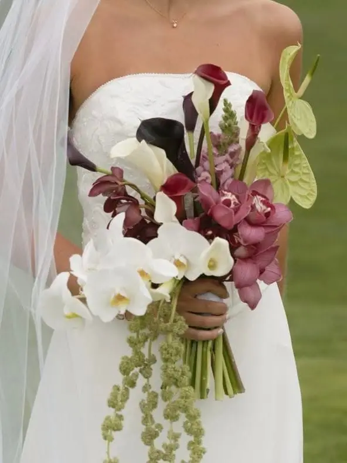
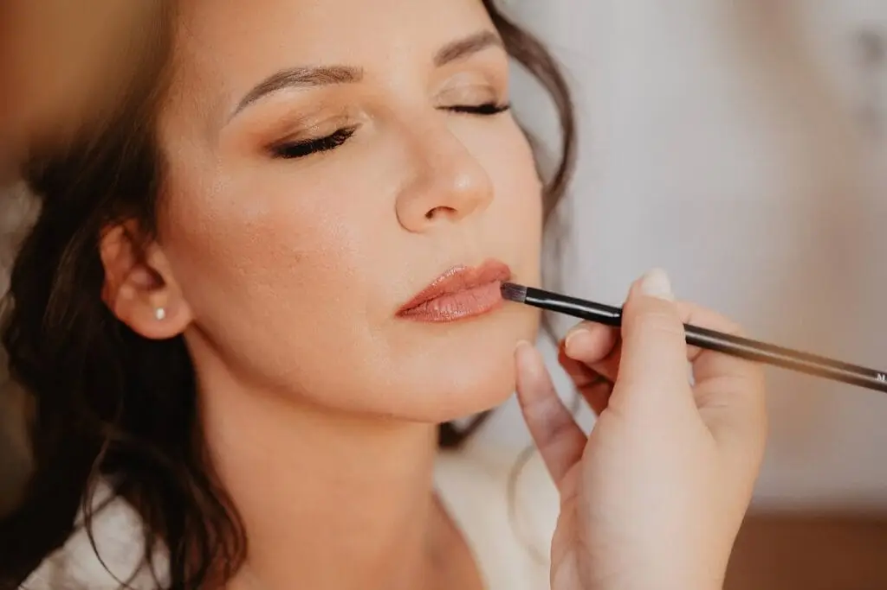
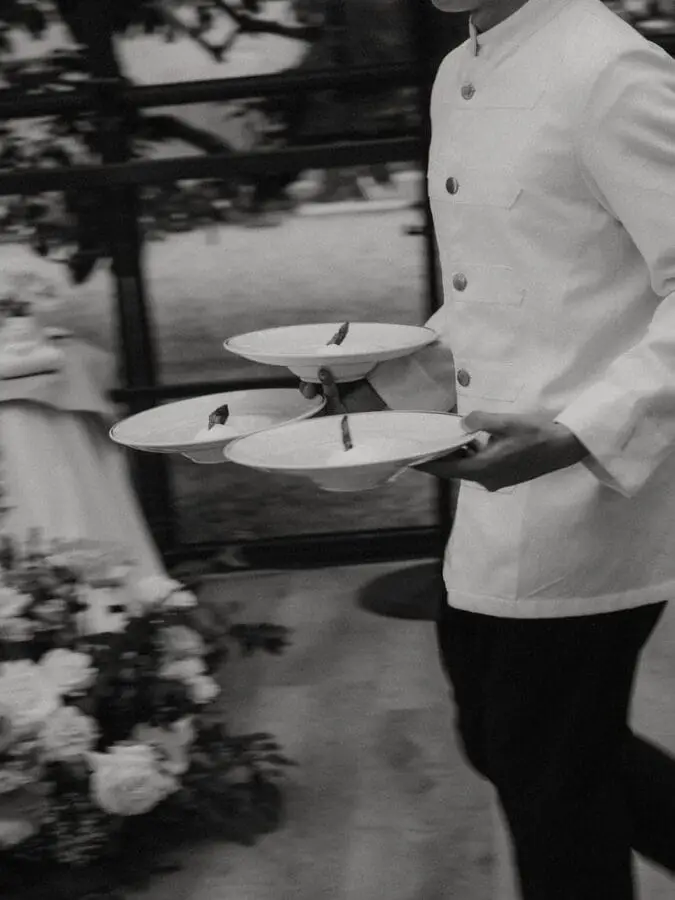
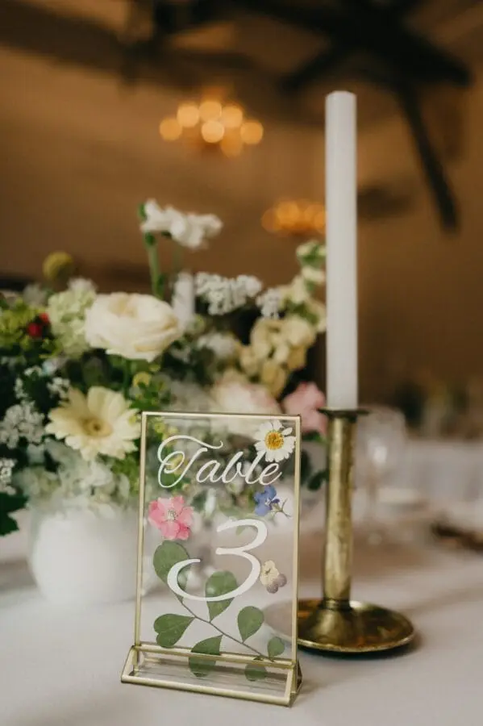

Planning a wedding is as intense as it is moving. Every detail counts, and behind every successful celebration lies a careful selection of skilled, passionate and perfectly coordinated wedding suppliers. From the caterer to the DJ, the professional photographer or the officiant, each plays an essential role in the success of your big day.
Choosing your suppliers isn't just about comparing prices or services online. Above all, it is about building a trusted team able to understand your vision, your wishes and the atmosphere you want to give your wedding. As a wedding planner, I know how stressful these choices can be for couples, especially faced with the sheer number of offers available.
In a region as dynamic as Nouvelle-Aquitaine, the range of wedding suppliers is vast and varied. Between the wine estates around Bordeaux, the châteaux, charming venues and experienced professionals, it can be hard to find your way. Yet choosing the right suppliers is one of the keys to a calm wedding that truly reflects you.
Each professional steps in at a specific moment of your day and directly shapes your guests' experience. A quality caterer leaves a lasting impression with refined cuisine, a DJ or band creates a festive, memorable atmosphere, a photographer captures authentic emotions and an officiant gives meaning and depth to your ceremony. These choices must therefore be made with care, taking into account your budget, your style and your priorities.
With a good method and the support of a wedding planner, it is possible to select suppliers perfectly suited to your project while avoiding unpleasant surprises. In this article, we guide you step by step through choosing your wedding suppliers and building a harmonious, smooth and unforgettable day.
The caterer: the heart of your wedding reception
The wedding meal is undoubtedly one of the moments your guests look forward to most. It sets the pace of the reception, creates strong memories and plays a full part in the overall experience of your day. Choosing your wedding caterer is therefore an essential step that deserves particular attention.
Beyond taste, a good caterer is a true trusted partner. They must be able to adapt to your project, your venue and the atmosphere you want to create. Since every wedding is unique, the menu should reflect your personality and your vision: traditional or gastronomic cuisine, vegetarian or vegan options, a seated meal, a cocktail-style dinner, an elegant buffet or convivial food stations. The aim is to offer a culinary experience in keeping with the spirit of your wedding.
Logistics are also a deciding factor. Not all venues have the same facilities, and an experienced caterer knows how to adapt to technical constraints: an on-site kitchen or not, access to the estate, timings, the number of guests or the weather for outdoor receptions. This ability to anticipate guarantees smooth, stress-free service on the big day.
Taking dietary requirements and allergies into account is now essential. Intolerances, specific menus and children's options must be carefully planned. A professional caterer will guide you on these aspects and offer suitable alternatives without compromising the quality or presentation of the dishes.
The tasting remains an essential step in choosing your caterer. It lets you approve the flavours and presentation, and also assess the team's attentiveness, availability and reliability. This is often when trust is built and you can really picture your reception.
Finally, a good caterer doesn't just serve a meal. They coordinate with the other suppliers, manage their team discreetly and contribute to the overall atmosphere of your reception. On your wedding day, being able to count on an experienced caterer is a real source of peace of mind and lets you fully enjoy every moment.




The DJ or band: creating the perfect atmosphere for your wedding
The music is one of the pillars of a successful wedding. It accompanies every highlight of the day and directly shapes the energy of your reception. Choosing your wedding DJ or a live band should leave nothing to chance. These suppliers are responsible for the overall atmosphere, the shared emotions and the memories danced until the end of the night.
A good music professional must above all understand your world, your story and the style you want to give your wedding. From the very first conversation, it is essential to discuss your musical tastes, your inspirations and the songs you absolutely want to hear… or avoid. This preparation lays clear foundations and ensures the music on the day is true to your personality.
Throughout the day, music accompanies key moments: the couple's entrance, arrival in the room, the first dance, the highlights of the reception and of course the party. Each of these moments requires a precise sense of timing. The music must support the emotion, bring guests together and set the pace of the day without ever taking over.
Today, many wedding DJs offer a tailor-made service, with preparatory meetings, a personalised playlist and quality professional equipment. Sound for the ceremony, microphones for the speeches, lighting suited to the desired mood: every detail contributes to a smooth, immersive experience for your guests.
A good DJ or experienced band also knows how to read the room. They watch reactions, adapt to the different generations and adjust the music in real time to keep the energy up. This adaptability makes all the difference between simply playing music and creating a successful, convivial and memorable party.
Choosing between a wedding DJ and a live band depends above all on your wishes and the atmosphere you want. A band brings a warm, authentic touch, while a DJ offers greater musical variety and total flexibility. Either way, trust, good communication and the supplier's professionalism remain the keys to a great atmosphere.
The photographer: capturing the emotion of your wedding
Wedding photos are one of the few tangible keepsakes you will keep for the rest of your life. They tell your story and capture the looks, the emotions and the moments that are sometimes invisible on the day. Choosing your wedding photographer therefore deserves particular attention, because their work will stay with you long after the celebration.
Every photographer has their own style and sensitivity: natural, spontaneous reportage, more posed photos, an artistic or editorial approach. It is essential to choose a professional whose style matches your personality and the atmosphere you want for your wedding. To do so, take the time to look at complete galleries, not just a few images selected for social media. This will let you assess the consistency of their work and how they handle light, emotions and the key moments of the day.
The connection is also vital. Your photographer will be by your side for many hours, sometimes from getting ready through to the evening. They must know how to be discreet while staying attentive, put you at ease and build a relationship of trust. This rapport will show directly in your photos and give a natural, authentic result.
In regions such as Nouvelle-Aquitaine, many wedding photographers know the venues, wine estates, châteaux and natural spaces inside out. This experience is a real asset for bringing out the best in your photos, anticipating the best viewpoints and making the most of the surrounding light. A good photographer doesn't just take pictures: they tell the story of your day with accuracy, emotion and elegance.

The officiant: giving meaning to your wedding ceremony
At a symbolic ceremony, the officiant plays a central role. They tell your story, put your emotions into words and give real depth to your commitment. Much more than a simple master of ceremonies, the wedding officiant creates a powerful, sincere and deeply personal moment, for you and your loved ones alike.
Whether a professional or someone chosen from among your loved ones, the officiant must above all be attentive, kind and perfectly at ease speaking in public. Their ability to convey emotion, hold the guests' attention and create an authentic atmosphere is essential. A successful ceremony relies on a subtle balance of emotion, rhythm and personalisation.
A good officiant takes the time to get to know you and talk with you about your story, your values and your vision of marriage. They build a tailor-made ceremony true to your relationship, including readings, symbolic rituals or contributions from your loved ones. More and more couples now choose a personalised symbolic ceremony, often outdoors, in natural or vineyard settings, to live a unique, timeless moment.
The importance of coordinating suppliers
Choosing good wedding suppliers is essential, but coordinating them is just as important. Each one has a specific role, and it is the harmony between them all that guarantees your day runs smoothly. The ceremony in particular requires precise organisation: set-up, sound, timing of entrances and speeches.
This is where the wedding planner's role really comes into its own. She accompanies you at every stage, advises you on your choices and puts you in touch with trusted professionals suited to your budget and your project. With in-depth local knowledge of Nouvelle-Aquitaine, a wedding planner anticipates the unexpected, ensures smooth organisation and lets you fully enjoy your wedding with a light heart on the big day.

In short
Choosing your wedding suppliers well is above all a question of trust, communication and coherence with your vision. Every professional you choose contributes to the success of your day and to the emotion you and your guests will experience. Caterer, DJ, photographer, officiant… all must share the same high standards and the same sensitivity.
Taking the time to meet them, asking the right questions and comparing services lets you make informed, confident choices. Beyond technical skills, rapport is essential: an attentive, caring and committed supplier will make all the difference on your wedding day.
Surrounding yourself with passionate professionals, used to working together and adapting to the unexpected, is the key to fully enjoying your wedding without unnecessary stress. In the Bordeaux region, where the possibilities are endless, the support of a wedding planner lets you build a tailor-made team in perfect harmony with your project.
Your wedding deserves careful organisation and suppliers who live up to your emotions, to turn this unique day into an unforgettable memory that truly reflects you.
Lovely Day Event offers several services
Wedding planning
I step in at every stage of your preparations and guide you through your choices, bringing ideas and suggestions so that your wedding looks like no one but you.
On-the-day coordination
I will be the conductor of your day, managing the suppliers, the set-up of your decor and the smooth running of this beautiful day.
Wedding design
Creative and passionate, I am a certified Wedding Designer and I create a scenographic atmosphere that matches the theme of your wedding. Styling is included in the Signature package, or offered as an add-on to on-the-day coordination.